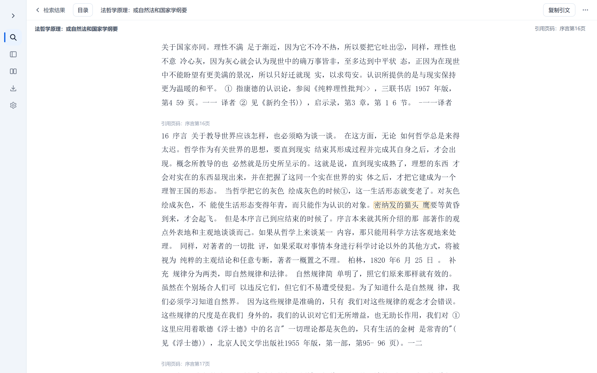
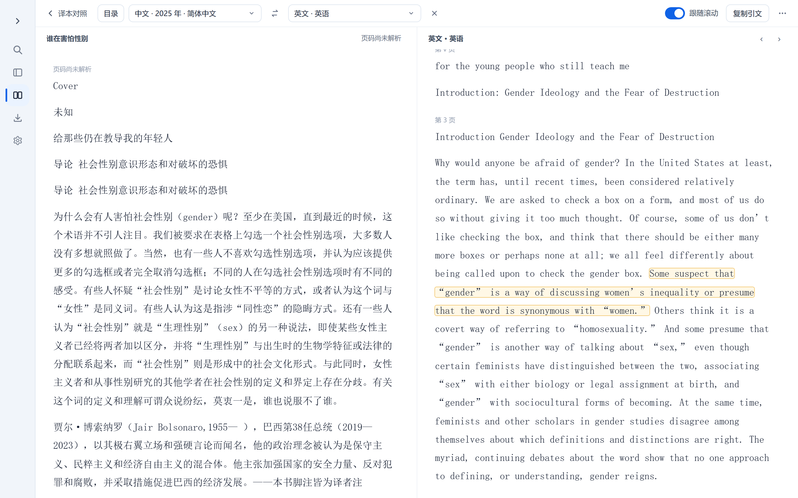
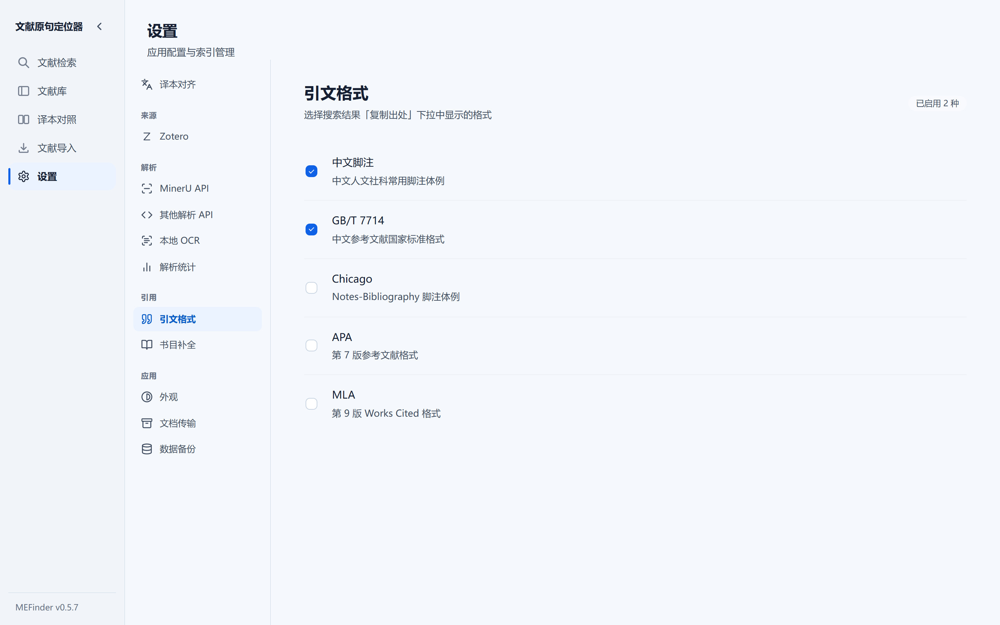
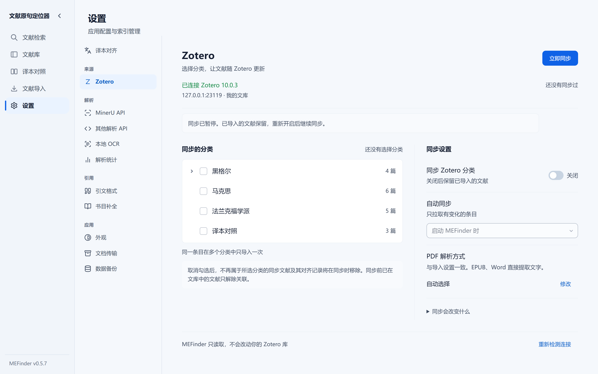

01
收书
PDF、Word、EPUB 直接进库，文本型文件在本机解析。扫描件、乱码文本层和复杂版面，才由你决定是否交给 MinerU 或其他视觉 API。
Zotero 分类可以只读同步过来；换设备时导出 .mefinder.zip 文档包，重新导入即可，不必重跑 OCR。
PDF · Word · EPUB 本地文献原句与页码定位
不是 PDF 物理页码。PDF 第 69 页，书上印的是序言第 16 页。
文献原句定位器（MEFinder）是一款本地优先的文献原句检索、页码定位与引文辅助工具。完整句子、残缺片段、带着错字的记忆都可以交给它：它在你自己的文献库里找回原文，标出书内实际页码，再把出处排成你要的格式。
书里印的是「密纳发」。换个译名、记错两个字，模糊模式照样把它找回来，给的是书内实际页码，不是 PDF 第几页。真实软件检索的是你整个文献库，不是这四段。
页码
PDF 阅读器显示的页数从封面算起，序言、目录、插页都占页数，和书上印的页码对不上。MEFinder 的每条检索结果都带着书内实际页码。
| 《法哲学原理》里的一句话 | PDF 物理页码 | 书内实际页码 |
|---|---|---|
| 密纳发的猫头鹰要等黄昏到来，才会起飞。 | 第 69 页 | 序言第 16 页 |
| 婚姻作为直接伦理关系首先包括自然生活的环节。 | 第 272 页 | 第 201 页 |
数据取自 MEFinder 对同一份 PDF（黑格尔著，范扬、张企泰译）的实际定位结果。两处相差 53 和 71 页，差值还不固定，靠「减去一个数」换算不出来。
功能
01
PDF、Word、EPUB 直接进库，文本型文件在本机解析。扫描件、乱码文本层和复杂版面，才由你决定是否交给 MinerU 或其他视觉 API。
Zotero 分类可以只读同步过来；换设备时导出 .mefinder.zip 文档包，重新导入即可，不必重跑 OCR。
02
每本文献带上作者、译者、出版社、页数和页码状态。书目待补全、页码待处理单独列在底部，点进去就能处理；同一部作品的不同版本在这里互相关联。
可按来源、格式和文献范围筛选，也可把指定页按原书页码或 PDF 物理页码导出成 Markdown。
03
五种模式：自动、精确、忽略空格、忽略标点、模糊。残缺的半句话、记混的译名、OCR 留下的错字都能命中，旁边就是它引用的那一页。
繁简统一检索默认开启：用简体关键词命中繁体原文，结果与导出保留原文写法。
04
从命中处直接打开结构化文本，读命中段落和相邻内容，也能翻回原始 PDF 页面。目录读取已入库的一、二级标题。
可在设置里开启独立阅读窗口，让阅读与对照单独移动、缩放；关闭时仍在主窗口内读。

05
把同一部作品的原文与译本、或不同版本归入作品组，选两版逐段对齐，双栏对照阅读，在版本之间定位对应文字。对齐在本机完成。
两栏跟随滚动，对齐的段落用琥珀色框出，选中即可复制引文。页码按栏各自标注：英文原书有出版方页码，中译本没有，就显示「页码尚未解析」。置信度偏低的段落旁标「!」，可以人工指定对应的译文段。首次生成对齐前，要在设置里联网安装一次计算组件（约 94 MiB）和跨语言模型，之后计算全程离线。

06
识别并补全书目信息，把出处一次排成中文脚注、GB/T 7714、APA、MLA 或 Chicago。已配对的脚注随正文带出。
出处里的页码就是书内实际页码，和上面「页码」一节是同一套数据。

MCP
MEFinder 自己不接大模型，也不生成回答。它提供的是一个本地 MCP 接口：发布包里附带 MEFinderMCP（Windows 安装版、绿色版和 macOS 版都有，不用另装 Python），你把它配进自己在用的 Agent，比如 Claude Code、Codex、WorkBuddy，Agent 就能调用 17 个工具查你的文献库。用哪个 Agent、哪个模型、哪个账号，都是你那边的事，和 MEFinder 无关。桌面端不必开着，MCP 进程本身不联网。
Agent 拿到的不是 PDF 原件，而是 MEFinder 解析好、存进库里的结构化结果：原文、文献和段落 ID、PDF 页码、书内引用页码，以及这个页码是怎么来的。查到的句子可以直接回到原书那一页核对。
直接让 Agent 读 PDF
让 Agent 读 MEFinder 的 JSON
locate_quote 返回的一条结果（节选，省略了整页原文和前后文）{
"source_file_id": "pdf-import-69ba2b6b34dae613",
"document_title": "法哲学原理：或自然法和国家学纲要",
"paragraph_id": "pdf-import-69ba2b6b34dae613-P000014",
"matched_text": "密纳发的猫头鹰要等黄昏到来，才会起飞",
"match_type": "exact",
"match_score": 1.0,
"physical_page": { "start_index": 14, "end_index": 14 },
"citation_page": { "start": "ix", "end": "ix", "status": "calibrated" },
"page_mapping": { "method": "native_pdf_edge_sequence", "confidence": 0.99 }
}verify_quotes · diff_quote
把正文里的引文交给 Agent，它一次批量比对，每条标出 verified（逐字一致）、approximate（相近，可能抄错）或 not_found（库里没有）。相近的几条再和原句逐字对齐，多了、漏了、改了哪几个字都会标出来。
下面这五条引文，原书里是这么写的吗？locate_quote · verify_quotes
Agent 用它自己的文件权限读笔记，比如 Obsidian 里的某一篇，再把其中的引文逐条交给 MEFinder：原句在不在、页码对不对、上下文有没有被截断。MEFinder 不读也不改你的笔记文件。
这篇笔记里的引文，哪些和原书对不上？find_parallel_passages
给一句中译，指定要找的语言，比如英语、德语，返回原书里对应位置的几个候选和前后文，候选来自作品组已经生成的对齐。Agent 比较语义、专名和引文结构后再确认；合理的候选不止一个时，它会全部列出，不替你挑。反过来，给一句原文找中译也行。
这句中译在德文原书里对应哪一句？find_parallel_passages · locate_quote
读中译本记笔记时，让 Agent 在每条引文下面附上原文和原书页码：先定位中译引文的出处，再找它在原书里的对应句。候选不唯一的地方，Agent 会标出来留给你挑，不会随手配一句。
给这篇笔记里的中译引文都配上英文原文和页码。search_passages · read_document_window
只记得大意时，先按相关性召回段落，再逐字定位。读一本书时按需取前后几页，不必把整本塞进对话。笔记由 Agent 写，写得对不对，仍以书里的原文为准。
《法哲学原理》序言里讲哲学来得太迟的是哪一段？| 用途 | 工具 |
|---|---|
| 定位与阅读 | list_documents 列出已入库文献、ID 和所属作品 · list_sections 列出章节 · locate_quote 定位原句，返回上下文、匹配方式和页码状态 · read_document_window 读命中处前后的若干页或段落，也可按章节读 · describe_page_mapping 说明哪些页码可用于正式引用、PDF 页与印刷页码怎么对应 |
| 核对 | verify_quotes 批量核对多条引文 · diff_quote 把疑似错引和原句逐字对齐 |
| 检索 | search_passages 按大意召回相关段落；命中只说明内容相关，逐字核对还要用 locate_quote |
| 译本对照 | find_parallel_passages 给一句中译，按指定语言返回原书里的对应候选和前后文，不做机器翻译 |
| 题录 | read_bibliographic_pages 读取版权页、CIP 页 · read_bibliographic_metadata 列出题录字段哪些已填、存疑或缺失 · propose_bibliographic_update 依据原书提议补全 · confirm_bibliographic_update 你确认后只填空字段 |
| 对齐修正 | propose_alignment_correction 提出修正 · confirm_alignment_correction 你确认后生效 · revoke_alignment_correction 撤销 · list_alignment_corrections 查看已有修正 |
17 个工具里 12 个只读。其余 5 个用来修正译本对齐和补全题录，必须经你确认才会生效。这些工具不做问答、总结或翻译。
邪修用法
下面这些不是 MEFinder 设计时的主要用途，是身边的人自己摸出来的，效果没有专门验证过，照做之前先拿几本书试一试。
有位工科朋友的文献都攒在 Zotero 里，可 Zotero 把每篇 PDF 各放在一个单独的文件夹里，想整批交给 Agent 很麻烦。他是这么接的：
书还是得自己读。Agent 能做的，是先把带页码的原句一段段摘出来，你读的时候对着核，写笔记时引文和页码都是现成的。
把命令里的路径换成你电脑上 MEFinderMCP 的位置：
C:\Users\<用户名>\AppData\Local\Programs\MEFinder\MEFinderMCP.exeMEFinderMCP.exe/Applications/MEFinder.app/Contents/MacOS/MEFinderMCPclaude mcp add --transport stdio --scope user mefinder -- "D:\MEFinder\MEFinderMCP.exe"codex mcp add mefinder -- "D:\MEFinder\MEFinderMCP.exe"Codex 也可以在设置里用表单添加，类型选 STDIO。WorkBuddy、ZCode 的接法和常见配置错误见 MCP 配置教程。
配好后对 Agent 说「请只使用 mefinder，列出已经导入的文献」，能列出你库里的书就是接通了。
隐私MCP 进程本身不联网，但工具返回的原文和上下文会进入你的 Agent 的对话，再由 Agent 发给它所用的模型。未公开发表的文献、他人的手稿，接入前请先考虑这一点。
外观
浅色、深色各 9 套，分开选、分开保存。外观模式可以固定为浅色或深色，也可以跟随系统，白天和夜里各用各的那一套。
预设都不合意时，可以新建自定义主题：挑强调色、命中高亮色、背景色和文字色，再调对比度，浅色、深色各自保存。
色卡用的是软件里各主题的实际配色：大字是正文色，「文」字底色是命中高亮色，下方色条是强调色。深色主题的配色取自 GitHub Dark、Catppuccin、Dracula、Nord 等常见编辑器主题的原版色值。
模块
软件的设置页就是这张表：来源、解析、引用、应用各自成组，用不到的一直留着也不会碍事。下面按环节列出当前实现，以及它的边界。
| 环节 | 现在能做什么 | 边界 |
|---|---|---|
| 来源 | 手动导入 · .mefinder.zip 文档包 · Zotero 7 本机只读接口同步分类 | Zotero 同步本版只支持「我的文库」，群组文库不在范围内 |
| 解析 | PDF / Word / EPUB 本机解析 · MinerU API · 其他视觉解析 API · 本机离线 OCR | 本机 OCR 覆盖日文、日文古籍与繁体竖排古籍，不提供现代中文 OCR |
| 检索 | FTS5 trigram 全文 · 自动 / 精确 / 忽略空格 / 忽略标点 / 模糊 · 繁简统一 | 模糊模式给的是候选与可信度，不保证唯一正确答案 |
| 页码 | PDF 物理页与书内引用页分开 · 自动映射 · 人工分段校准 · EPUB page-list / pagebreak | 没有出版方页码时如实标注「页码尚未解析」，不推算、不补数 |
| 对照 | 作品组 · 原文与译本逐段自动对齐 · 双栏阅读 · 正文范围人工修正 · 一次全部重跑 | 自动对齐只支持 PDF 与 EPUB 文献 |
| 引用 | 书目识别与补全 · 中文脚注 / GB/T 7714 / APA / MLA / Chicago · 按页导出 Markdown 与 EPUB | EPUB 页外脚注暂不保证随正文带出 |
| MCP | 17 个工具接入你自己的 Agent（任何支持 MCP 的客户端）：批量核对引文是否逐字命中、比对错引差异、按主题召回段落、按章节阅读、说明页码映射、读取版权页与题录缺口并经确认补全、辅助修正对齐 | 侧车读的是同一个本机库；库被桌面端占用时以桌面端为准 |
| 应用 | 18 套界面主题（浅色、深色各 9 套）· 跟随系统切换深浅色 · 自定义主题 · 独立阅读窗口 · 数据位置：打开或迁移资料库，比如云盘同步的文件夹 | 「导出备份」只含页码、书目和偏好，不含 PDF 与索引库；完整备份要复制整个数据目录 |
| 数据 | SQLite schema 版本化迁移 · 嵌入向量携带 model_id，不跨模型混用 | 旧版本无法打开升级后的库 |

边界
索引、检索、页码映射、对齐和大部分元数据处理都在你本机完成，文件留在原处，数据库是一个你自己能备份的 SQLite 文件。没有账号，没有云端同步，没有遥测上传你的阅读记录。下面这几条是设计约束，不是待补功能。
下载
Version 0.5.5 · 发布于 2026-09-24 · 更新日志 · v0.5.7 迭代中（主题：架构重构与跨平台验收）
| 平台 | 文件 | 大小 | 校验 |
|---|---|---|---|
| Windows | 安装包 setup.exe | 74.9 MB | SHA-256 |
| Windows | 便携包 portable.zip | 89.7 MB | SHA-256 |
| macOS · Apple 芯片 | dmg · zip | 95.6 MB | 随附 sidecar |
| macOS · Intel | dmg · zip | 99.0 MB | 随附 sidecar |
%LOCALAPPDATA%\MEFinder；绿色版解压后双击「文献原句定位器.exe」，程序和数据都留在解压目录里。发布包没有代码签名，首次运行可能出现 SmartScreen 提示。brew upgrade --cask mefinder 升级。brew trust sabercomo/mefinder
brew tap sabercomo/mefinder
brew install --cask mefinder缘起
作者是文科在读硕士。写小论文时，每到定稿前都要把正文里的引文一条条重新核对：原文有没有抄错，出处有没有写对，页码准不准，对上下文的理解有没有偏差。写大论文时文献更多了，于是一遍遍在几个 PDF 之间打开、搜索、翻页、核对。
找了一圈没有贴合这种需求的软件，就自己做了一个。这也是第一次完整做完一个软件项目，很多东西边做边学。如果它没找到你确定存在的句子，或者页码、题录处理得不对，欢迎附上具体样例提 Issue。